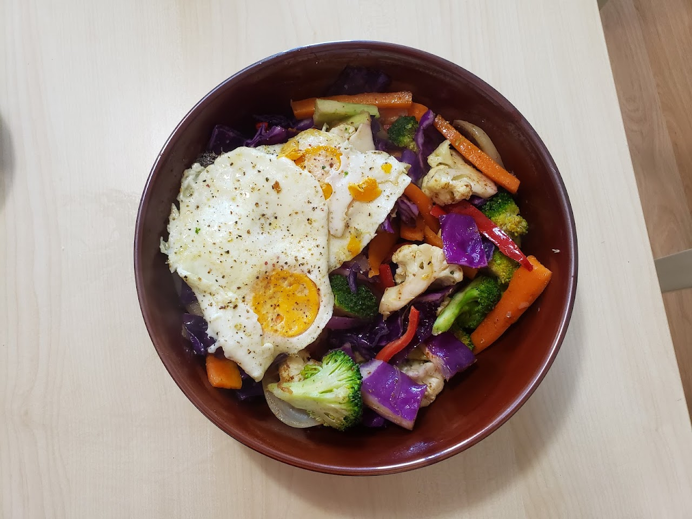

Stir Fry
<
Barker's Veggie Stir-Fry With Egg
This is a delicious recipe that doesn't take much time to make. I've been making it for years. Feel free to tweak the recipe to your liking. I hope you enjoy it!
Ingredients
- oil
- eggs
- broccoli
- cauliflower
- carrots
- cabbage
- onion
- garlic
- peppers
- soy sauce
- salt
- black pepper
Steps
- Cut up vegetables into small pieces.
- Heat up wok and add a little bit of oil.
- Once oil is hot, add aromatics and cook while stirring for a couple of mintues.
- Add hardest veggies first (carrots, broccoli, etc...) and cook these for a few minutes.
- Add softer vegetables (zuchinni, cabbage, etc...) and cook these for a bit.
- Add whatever spices/salt to taste.
- Start frying 2 eggs in oil in a seperate pan.
- Add soy sauce to veggies if desired.
- Plate and Enjoy!